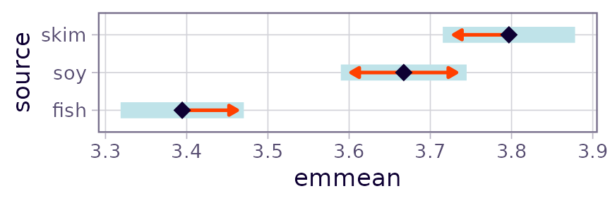
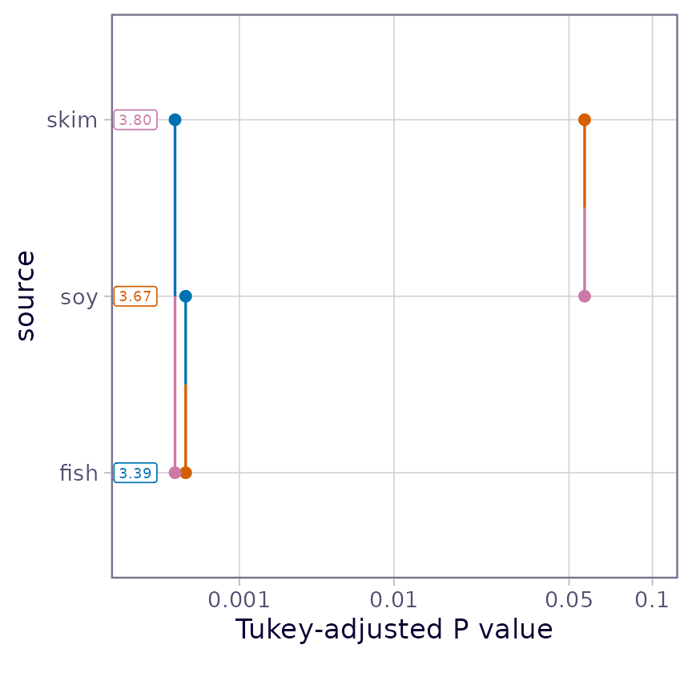
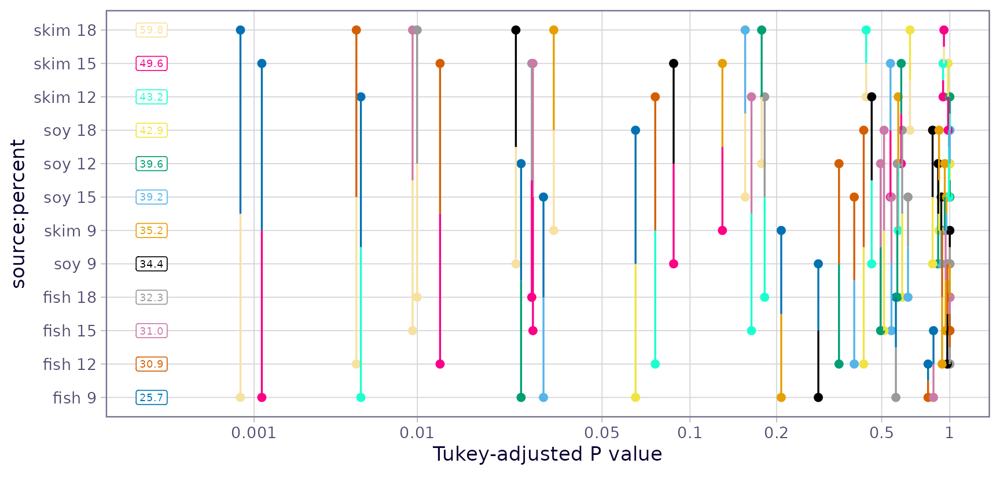
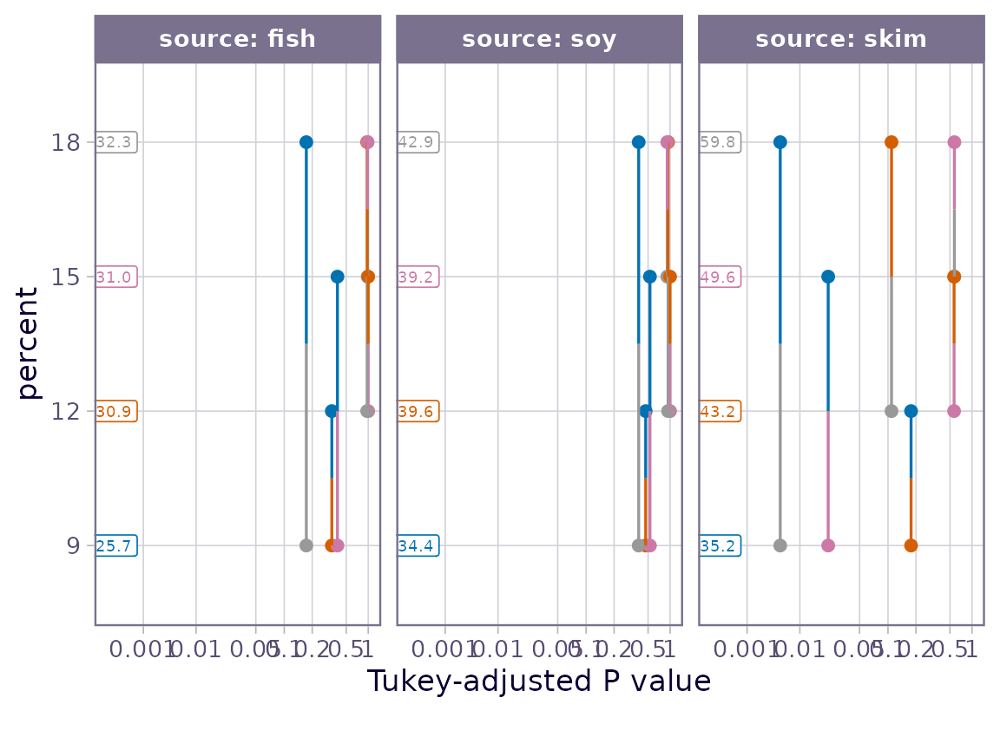

Comparisons and contrasts in emmeans
emmeans package, Version 1.11.1.1
Source:vignettes/comparisons.Rmd
comparisons.RmdContents
This vignette covers techniques for comparing EMMs at levels of a factor predictor, and other related analyses.
- Pairwise comparisons
- Other contrasts
- Formula interface
- Custom contrasts and linear functions
- Special behavior with log transformations
- Interaction contrasts (in “interactions” vignette)
- Multivariate contrasts (in “interactions” vignette)
Pairwise comparisons
The most common follow-up analysis for models having factors as
predictors is to compare the EMMs with one another. This may be done
simply via the pairs() method for emmGrid
objects. In the code below, we obtain the EMMs for source
for the pigs data, and then compare the sources
pairwise.
pigs.lm <- lm(log(conc) ~ source + factor(percent), data = pigs)
pigs.emm.s <- emmeans(pigs.lm, "source")
pairs(pigs.emm.s)## contrast estimate SE df t.ratio p.value
## fish - soy -0.273 0.0529 23 -5.153 0.0001
## fish - skim -0.402 0.0542 23 -7.428 <.0001
## soy - skim -0.130 0.0530 23 -2.442 0.0570
##
## Results are averaged over the levels of: percent
## Results are given on the log (not the response) scale.
## P value adjustment: tukey method for comparing a family of 3 estimatesIn its out-of-the-box configuration, pairs() sets two
defaults for summary():
adjust = "tukey" (multiplicity adjustment), and
infer = c(FALSE, TRUE) (test statistics, not confidence
intervals). You may override these, of course, by calling
summary() on the result with different values for
these.
In the example above, EMMs for later factor levels are subtracted
from those for earlier levels; if you want the comparisons to go in the
other direction, use pairs(pigs.emm.s, reverse = TRUE).
Also, in multi-factor situations, you may specify by
factor(s) to perform the comparisons separately at the levels of those
factors.
Matrix displays
The numerical main results associated with pairwise comparisons can
be presented compactly in matrix form via the pwpm()
function. We simply hand it the emmGrid object to use in
making the comparisons:
pwpm(pigs.emm.s)## fish soy skim
## fish [3.39] <.0001 <.0001
## soy -0.273 [3.67] 0.0570
## skim -0.402 -0.130 [3.80]
##
## Row and column labels: source
## Upper triangle: P values adjust = "tukey"
## Diagonal: [Estimates] (emmean)
## Lower triangle: Comparisons (estimate) earlier vs. laterThis matrix shows the EMMs along the diagonal, \(P\) values in the upper triangle, and the differences in the lower triangle. Options exist to switch off any one of these and to switch which triangle is used for the latter two. Also, optional arguments are passed. For instance, we can reverse the direction of the comparisons, suppress the display of EMMs, swap where the \(P\) values go, and perform non-inferiority tests with a threshold of 0.05 as follows:
pwpm(pigs.emm.s, means = FALSE, flip = TRUE, # args for pwpm()
reverse = TRUE, # args for pairs()
side = ">", delta = 0.05, adjust = "none") # args for test()## fish soy skim
## fish 0.273 0.402
## soy <.0001 0.130
## skim <.0001 0.0013
##
## Row and column labels: source
## Lower triangle: P values side = ">" delta = 0.05
## Upper triangle: Comparisons (estimate) later vs. earlierWith all three P values so small, we have fish, soy, and skim in increasing order of non-inferiority based on the given threshold.
When more than one factor is present, an existing or newly specified
by variables() can split the results into l list of
matrices.
Effect size
Some users desire standardized effect-size measures. Most popular is
probably Cohen’s d, which is defined as the observed
difference, divided by the population SD; and obviously Cohen effect
sizes are close cousins of pairwise differences. They are available via
the eff_size() function, where the user must specify the
emmGrid object with the means to be compared, the estimated
population SD sigma, and its degrees of freedom
edf. This is illustrated with the current example:
## contrast effect.size SE df lower.CL upper.CL
## fish - soy -2.37 0.577 23 -3.56 -1.175
## fish - skim -3.49 0.698 23 -4.94 -2.051
## soy - skim -1.12 0.490 23 -2.14 -0.112
##
## Results are averaged over the levels of: percent
## sigma used for effect sizes: 0.1151
## Confidence level used: 0.95The confidence intervals shown take into account the error in
estimating sigma as well as the error in the differences.
Note that the intervals are narrower if we claim that we know
sigma perfectly (i.e., infinite degrees of freedom):
## contrast effect.size SE df lower.CL upper.CL
## fish - soy -2.37 0.460 23 -3.32 -1.418
## fish - skim -3.49 0.470 23 -4.47 -2.521
## soy - skim -1.12 0.461 23 -2.08 -0.172
##
## Results are averaged over the levels of: percent
## sigma used for effect sizes: 0.1151
## Confidence level used: 0.95Note that eff_size() expects the object with the means,
not the differences. If you want to use the differences, use the
method argument to specify that you don’t want to compute
pairwise differences again; e.g.,
(results are identical to the first effect sizes shown).
Graphical comparisons
Comparisons may be summarized graphically via the
comparisons argument in plot.emm():
plot(pigs.emm.s, comparisons = TRUE)
The blue bars are confidence intervals for the EMMs, and the red
arrows are for the comparisons among them. If an arrow from one mean
overlaps an arrow from another group, the difference is not
“significant,” based on the adjust setting (which defaults
to "tukey") and the value of alpha (which
defaults to 0.05). See the “xplanations” supplement for details
on how these are derived.
Note: Don’t ever use confidence intervals for EMMs
to perform comparisons; they can be very misleading. Use the comparison
arrows instead; or better yet, use pwpp().
A caution: it really is not good practice to draw a bright
distinction based on whether or not a P value exceeds some
cutoff. This display does dim such distinctions somewhat by allowing the
viewer to judge whether a P value is close to
alpha one way or the other; but a better strategy is to
simply obtain all the P values using pairs(), and
look at them individually.
Pairwise P-value plots
In trying to develop an alternative to compact letter displays (see next subsection), we devised the “pairwise P-value plot” displaying all the P values in pairwise comparisons:
pwpp(pigs.emm.s)
Each comparison is associated with a vertical line segment that joins the scale positions of the two EMMs being compared, and whose horizontal position is determined by the P value of that comparison.
This kind of plot can get quite “busy” as the number of means being compared goes up. For example, suppose we include the interactions in the model for the pigs data, and compare all 12 cell means:
pigs.lmint <- lm(log(conc) ~ source * factor(percent), data = pigs)
pigs.cells <- emmeans(pigs.lmint, ~ source * percent)
pwpp(pigs.cells, type = "response")
While this plot has a lot of stuff going on, consider looking at it
row-by-row. Next to each EMM, we can visualize the P values of
all 11 comparisons with each other EMM (along with their color codes).
Also, note that we can include arguments that are passed to
summary(); in this case, to display the back-transformed
means.
If we are willing to forgo the diagonal comparisons (where neither
factor has a common level), we can make this a lot less cluttered via a
by specification:
pwpp(pigs.cells, by = "source", type = "response")
In this latter plot we can see that the comparisons with
skim as the source tend to be statistically stronger. This
is also an opportunity to remind the user that multiplicity adjustments
are made relative to each by group. For example, comparing
skim:9 versus skim:15 has a Tukey-adjusted
P value somewhat greater than 0.1 when all are in one family of
12 means, but about 0.02 relative to a smaller family of 4 means as
depicted in the three-paneled plot.
Compact letter displays (CLDs)
Another way to depict comparisons is by compact letter
displays, whereby two EMMs sharing one or more grouping symbols are
not “significantly” different. These may be generated by the
multcomp::cld() function. I really recommend against this
kind of display, though, and decline to illustrate it. These displays
promote visually the idea that two means that are “not significantly
different” are to be judged as being equal; and that is a very wrong
interpretation. In addition, they draw an artificial “bright line”
between P values on either side of alpha, even
ones that are very close.
Other contrasts
Pairwise comparisons are an example of linear functions of EMMs. You
may use coef() to see the coefficients of these linear
functions:
## source c.1 c.2 c.3
## 1 fish 1 1 0
## 2 soy -1 0 1
## 3 skim 0 -1 -1The pairwise comparisons correspond to columns of the above results.
For example, the first pairwise comparison, fish - soy,
gives coefficients of 1, -1, and 0 to fish, soy, and skim, respectively.
In cases, such as this one, where each column of coefficients sums to
zero, the linear functions are termed contrasts
The contrast() function provides for general contrasts
(and linear functions, as well) of factor levels. Its second argument,
method, is used to specify what method is to be used. In
this section we describe the built-in ones, where we simply provide the
name of the built-in method. Consider, for example, the factor
percent in the model pigs.lm . It is treated
as a factor in the model, but it corresponds to equally-spaced values of
a numeric variable. In such cases, users often want to compute
orthogonal polynomial contrasts:
## contrast estimate SE df t.ratio p.value
## linear 0.9374 0.2110 23 4.452 0.0002
## quadratic -0.0971 0.0883 23 -1.099 0.2830
## cubic 0.1863 0.1880 23 0.992 0.3313
##
## Results are averaged over the levels of: source
## Results are given on the log (not the response) scale.
coef(ply)## percent c.1 c.2 c.3
## 1 9 -3 1 -1
## 2 12 -1 -1 3
## 3 15 1 -1 -3
## 4 18 3 1 1We obtain tests for the linear, quadratic, and cubic trends. The coefficients are those that can be found in tables in many experimental-design texts. It is important to understand that the estimated linear contrast is not the slope of a line fitted to the data. It is simply a contrast having coefficients that increase linearly. It does test the linear trend, however.
There are a number of other named contrast methods, for example
"trt.vs.ctrl", "eff", and
"consec". The "pairwise" and
"revpairwise" methods in contrast() are the
same as Pairs() and
pairs(..., reverse = TRUE). See
help("contrast-methods") for details.
Normalized contrasts
Sometimes users like contrast coefficients to be normalized – i.e.,
the sum of the squares of each set of contrast coefficients is equal to
1. This is possible with any contrast family by specifying
"nrmlz" as the method and the desired contrast family as
the family argument. For example,
nrmlz.emmc(1:4, family = "helmert")## 2 vs earlier 3 vs earlier 4 vs earlier
## 1 -0.7071068 -0.4082483 -0.2886751
## 2 0.7071068 -0.4082483 -0.2886751
## 3 0.0000000 0.8164966 -0.2886751
## 4 0.0000000 0.0000000 0.8660254
contrast(pigs.emm.s, "nrmlz", family = "pairwise")## contrast estimate SE df t.ratio p.value
## fish - soy -0.1929 0.0374 23 -5.153 0.0001
## fish - skim -0.2845 0.0383 23 -7.428 <.0001
## soy - skim -0.0916 0.0375 23 -2.442 0.0570
##
## Results are averaged over the levels of: percent
## Results are given on the log (not the response) scale.
## P value adjustment: tukey method for comparing a family of 3 estimatesNote that the above estimates and SEs differ from those in the example at the beginning of this vignette, but the the t ratios and P values are the same, because all we have done is rescale those comparisons.
Formula interface
If you already know what contrasts you will want before calling
emmeans(), a quick way to get them is to specify the method
as the left-hand side of the formula in its second argument. For
example, with the oranges dataset provided in the
package,
org.aov <- aov(sales1 ~ day + Error(store), data = oranges,
contrasts = list(day = "contr.sum"))
org.emml <- emmeans(org.aov, consec ~ day)
org.emml## $emmeans
## day emmean SE df lower.CL upper.CL
## 1 7.87 2.77 29.2 2.21 13.5
## 2 7.10 2.77 29.2 1.43 12.8
## 3 13.76 2.77 29.2 8.09 19.4
## 4 8.04 2.77 29.2 2.37 13.7
## 5 12.92 2.77 29.2 7.26 18.6
## 6 11.60 2.77 29.2 5.94 17.3
##
## Warning: EMMs are biased unless design is perfectly balanced
## Confidence level used: 0.95
##
## $contrasts
## contrast estimate SE df t.ratio p.value
## day2 - day1 -0.772 3.78 25 -0.204 0.9997
## day3 - day2 6.658 3.78 25 1.763 0.3241
## day4 - day3 -5.716 3.78 25 -1.513 0.4679
## day5 - day4 4.882 3.78 25 1.293 0.6128
## day6 - day5 -1.321 3.78 25 -0.350 0.9965
##
## P value adjustment: mvt method for 5 testsThe contrasts shown are the day-to-day changes.
This two-sided formula technique is quite convenient, but it can also
create confusion. For one thing, the result is not an
emmGrid object anymore; it is a list of
emmGrid objects, called an emm_list. You may
need to be cognizant of that if you are to do further contrasts or other
analyzes. For example if you want "eff" contrasts as well,
you need to do contrast(org.emml[[1]], "eff") or
contrast(org.emml, "eff", which = 1).
Another issue is that it may be unclear which part of the results is
affected by certain options. For example, if you were to add
adjust = "bonf" to the org.emm call above,
would the Bonferroni adjustment be applied to the EMMs, or to the
contrasts? (See the documentation if interested; but the best practice
is to avoid such dilemmas.)
Custom contrasts and linear functions
The user may write a custom contrast function for use in
contrast(). What’s needed is a function having the desired
name with ".emmc" appended, that generates the needed
coefficients as a list or data frame. The function should take a vector
of levels as its first argument, and any optional parameters as
additional arguments. It should also always have a ...
argument to allow for unspecified arguments that may occur in the
call.
As an example, suppose we want to compare every third level of a treatment. The following function provides for this:
skip_comp.emmc <- function(levels, skip = 1, reverse = FALSE, ...) {
if((k <- length(levels)) < skip + 1)
stop("Need at least ", skip + 1, " levels")
coef <- data.frame()
coef <- as.data.frame(lapply(seq_len(k - skip - 1), function(i) {
sgn <- ifelse(reverse, -1, 1)
sgn * c(rep(0, i - 1), 1, rep(0, skip), -1, rep(0, k - i - skip - 1))
}))
names(coef) <- sapply(coef, function(x)
paste(which(x == 1), "-", which(x == -1)))
attr(coef, "adjust") = "fdr" # default adjustment method
coef
}To test it, try 5 levels:
skip_comp.emmc(1:5)## 1 - 3 2 - 4 3 - 5
## 1 1 0 0
## 2 0 1 0
## 3 -1 0 1
## 4 0 -1 0
## 5 0 0 -1
skip_comp.emmc(1:5, skip = 0, reverse = TRUE)## 2 - 1 3 - 2 4 - 3 5 - 4
## 1 -1 0 0 0
## 2 1 -1 0 0
## 3 0 1 -1 0
## 4 0 0 1 -1
## 5 0 0 0 1(The latter is the same as "consec" contrasts.) Now try
it with the oranges example we had previously:
contrast(org.emml[[1]], "skip_comp", skip = 2, reverse = TRUE)## contrast estimate SE df t.ratio p.value
## 4 - 1 0.17 3.78 25 0.045 0.9645
## 5 - 2 5.82 3.78 25 1.542 0.4069
## 6 - 3 -2.15 3.78 25 -0.571 0.8601
##
## P value adjustment: fdr method for 3 testsThe contrast() function may in fact be used to compute
arbitrary linear functions of EMMs. Suppose for some reason we want to
estimate the quantities \(\lambda_1 =
\mu_1+2\mu_2-7\) and \(\lambda_2 =
3\mu_2-2\mu_3+1\), where the \(\mu_j\) are the population values of the
source EMMs in the pigs example. This may be
done by providing the coefficients in a list, and the added constants in
the offset argument:
LF <- contrast(pigs.emm.s,
list(lambda1 = c(1, 2, 0), lambda2 = c(0, 3, -2)),
offset = c(-7, 1))
confint(LF, adjust = "bonferroni")## contrast estimate SE df lower.CL upper.CL
## lambda1 3.73 0.0827 23 3.53 3.93
## lambda2 4.41 0.1340 23 4.09 4.73
##
## Results are averaged over the levels of: percent
## Note: contrasts are still on the log scale. Consider using
## regrid() if you want contrasts of back-transformed estimates.
## Confidence level used: 0.95
## Conf-level adjustment: bonferroni method for 2 estimatesSpecial properties of log (and logit) transformations
Suppose we obtain EMMs for a model having a response transformation
or link function. In most cases, when we compute contrasts of those
EMMs, there is no natural way to express those contrasts on anything
other than the transformed scale. For example, in a model fitted using
glm() with the gamma() family, the default
link function is the inverse. Predictions on such a model are estimates
of \(1/\mu_j\) for various \(j\). Comparisons of predictions will be
estimates of \(1/\mu_j - 1/\mu_{k}\)
for \(j \ne k\). There is no natural
way to back-transform these differences to some other interpretable
scale.
However, logs are an exception, in that \(\log\mu_j - \log\mu_k =
\log(\mu_j/\mu_k)\). Accordingly, when contrast()
(or pairs()) notices that the response is on the log scale,
it back-transforms contrasts to ratios when results are to be of
response type. For example:
pairs(pigs.emm.s, type = "lp")## contrast estimate SE df t.ratio p.value
## fish - soy -0.273 0.0529 23 -5.153 0.0001
## fish - skim -0.402 0.0542 23 -7.428 <.0001
## soy - skim -0.130 0.0530 23 -2.442 0.0570
##
## Results are averaged over the levels of: percent
## Results are given on the log (not the response) scale.
## P value adjustment: tukey method for comparing a family of 3 estimates
pairs(pigs.emm.s, type = "response")## contrast ratio SE df null t.ratio p.value
## fish / soy 0.761 0.0403 23 1 -5.153 0.0001
## fish / skim 0.669 0.0362 23 1 -7.428 <.0001
## soy / skim 0.879 0.0466 23 1 -2.442 0.0570
##
## Results are averaged over the levels of: percent
## P value adjustment: tukey method for comparing a family of 3 estimates
## Tests are performed on the log scaleAs is true of EMM summaries with type = "response", the
tests and confidence intervals are done before back-transforming. The
ratios estimated here are actually ratios of geometric means.
In general, a model with a log response is in fact a model for
relative effects of any of its linear predictors, and this
back-transformation to ratios goes hand-in-hand with that.
In generalized linear models, this behaviors will occur in two common cases: Poisson or count regression, for which the usual link is the log; and logistic regression, because logits are logs of odds ratios.